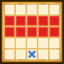

| Lv: | 140 |
|---|---|
| HP: | |
| MP: | |
| ATK: | |
| DEF: | |
| AGL: | |
| WIS: | |
| Move: | |
| Weight: | 65 |
| Weaknesses: | |
|
/ | |
|
|---|---|---|---|---|---|
| Resistances: | |
|
/ | |
|
| Immunities: | |
| Abilities | ||||||
|---|---|---|---|---|---|---|
| Level | Type | Name | MP | Element | Range | Description |
| 1 |  |
天界の守り | 24 |  |
 1-2 |
Reduces damage taken for 1 ally by 50% for 1 turn (Times usable: 1) |
| 33 |  |
天罰 | 133 | |
1-4 |
Deals major spell damage to 1 enemy, depletes 150 MP from enemy |
| 54 |  |
ステテコストリーム | 147 |  |
 Front |
Deals major surehit Woosh-type martial damage (314 base potency) to all enemies in area of effect, often stuns |
| 82 | Omniheal | 200 | |
 1-3 (incl. self) |
Heals a huge amount of HP for all allies in area of effect (Times usable: 2) |
|
| Base Perks | ||
|---|---|---|
| Level | Name | Description |
| 1 | Max HP +30 | Raises max HP by 30 |
| 1 | Max MP +15 | Raises max MP by 15 |
| 1 | 神のめぐみ | Raises max HP by 500 Raises max HP of all allies (incl. self) by 100 |
| 110, 120, 130, 140 | Spell Potency/Recovery +2% | Raises spell potency/recovery by 2% |
| 110, 120, 130, 140 | Martial Potency/Recovery +2% | Raises martial potency/recovery by 2% |
| Awakening Perks | ||
|---|---|---|
| Awakening | Name | Description |
| 1 | 神のチカラ | Battle start: Grants a barrier that reduces damage taken by 20% for 3 turns Action start on odd turns until turn 10: Raises DEF, AGL, and damage dealt for 3 turns |
| 2 | Bang Res +25 | Raises Bang resistance by 25 |
| 3 | 不動のこころ | When afflicted with a status ailment: Removes some status ailments, 1 time per battle This perk can be triggered by non-damage dealing abilities or attacks by allies |
| 3, 5 | Spell Potency/Recovery +5% | Raises spell potency/recovery by 5% |
| 3, 5 | Martial Potency/Recovery +5% | Raises martial potency/recovery by 5% |
| 4 | Crack Res +25 | Raises Crack resistance by 25 |
| 5 | 天界の加護 | When attacked by enemy: Heals 10% of the user's max HP |
| 1, 2, 3, 4, 5 | Stats Up | Raises HP, MP, ATK, DEF, WIS and AGL by 5% |